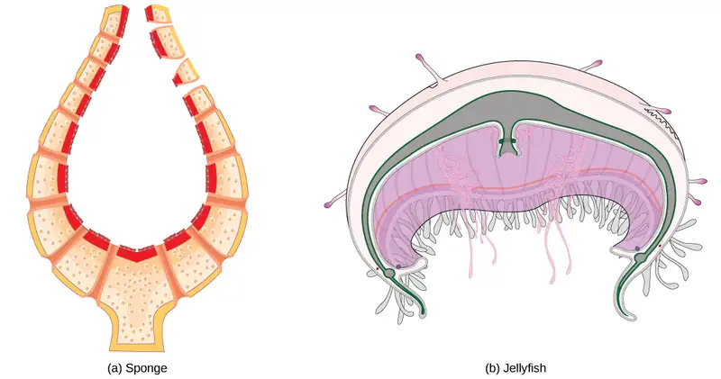
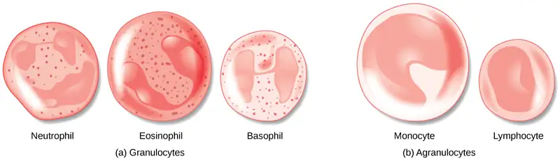
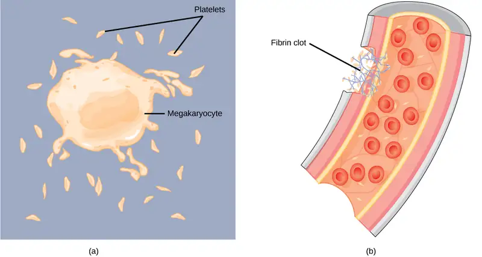
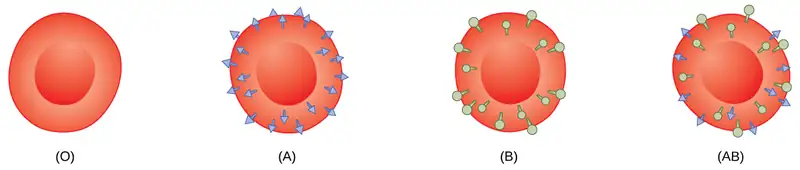
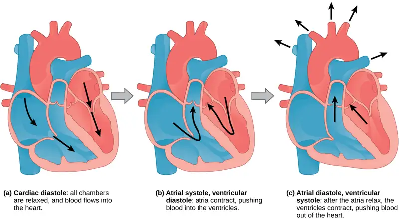
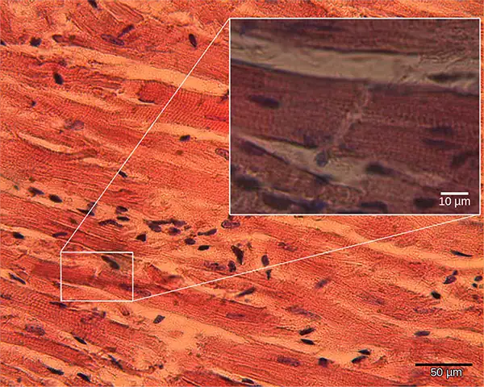
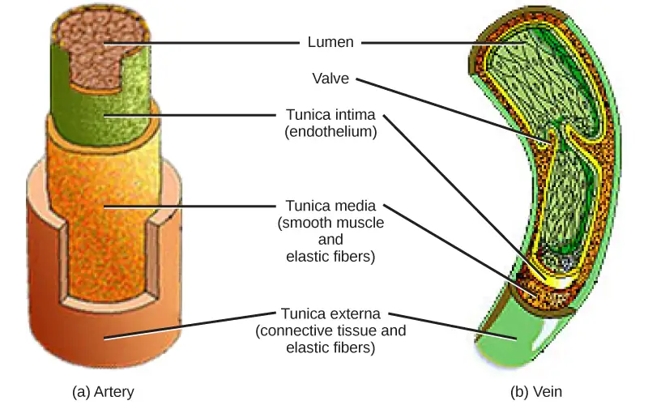
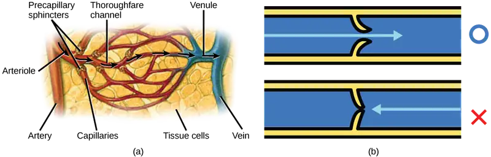
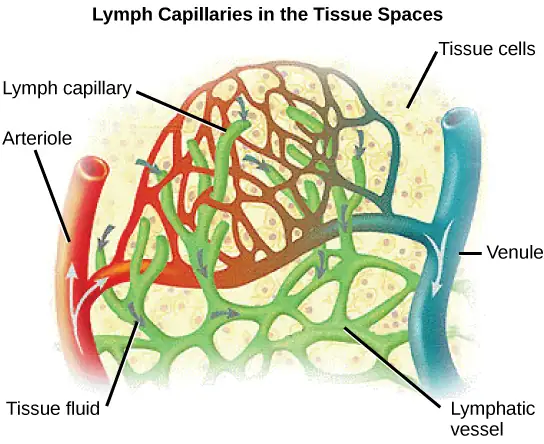
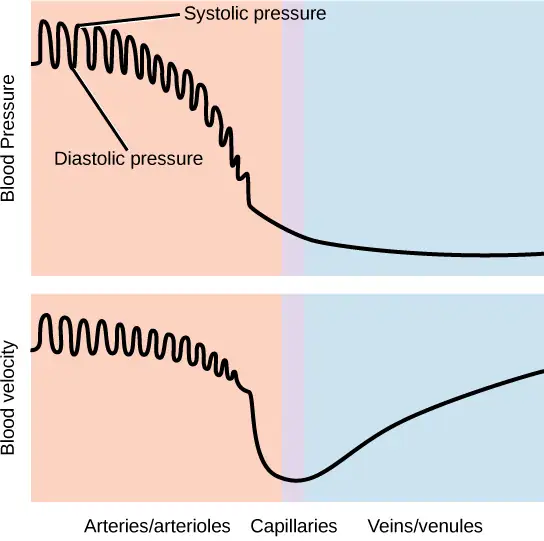

Chapter 40: The Circulatory System¶
Introduction¶
Most animals are complex multicellular organisms that require a mechanism for transporting nutrients throughout their bodies and removing waste products. The circulatory system has evolved over time from simple diffusion through cells in the early evolution of animals to a complex network of blood vessels that reach all parts of the human body. This extensive network supplies the cells, tissues, and organs with oxygen and nutrients, and removes carbon dioxide and waste, which are byproducts of respiration.
At the core of the human circulatory system is the heart. The size of a clenched fist, the human heart is protected beneath the rib cage. Made of specialized and unique cardiac muscle, it pumps blood throughout the body and to the heart itself. Heart contractions are driven by intrinsic electrical impulses that the brain and endocrine hormones help to regulate. Understanding the heart’s basic anatomy and function is important to understanding the body’s circulatory and respiratory systems.
Gas exchange is one essential function of the circulatory system. A circulatory system is not needed in organisms with no specialized respiratory organs because oxygen and carbon dioxide diffuse directly between their body tissues and the external environment. However, in organisms that possess lungs and gills, oxygen must be transported from these specialized respiratory organs to the body tissues via a circulatory system. Therefore, circulatory systems have had to evolve to accommodate the great diversity of body sizes and body types present among animals.
40.1 Overview of the Circulatory System¶
Learning Objectives
By the end of this section, you will be able to do the following:
- Describe an open and closed circulatory system
- Describe interstitial fluid and hemolymph
- Compare and contrast the organization and evolution of the vertebrate circulatory system
In all animals, except a few simple types, the circulatory system is used to transport nutrients and gases through the body. Simple diffusion allows some water, nutrient, waste, and gas exchange into primitive animals that are only a few cell layers thick; however, bulk flow is the only method by which the entire body of larger more complex organisms is accessed.
Circulatory System Architecture¶
The circulatory system is effectively a network of cylindrical vessels: the arteries, veins, and capillaries that emanate from a pump, the heart. In all vertebrate organisms, as well as some invertebrates, this is a closed-loop system, in which the blood is not free in a cavity. In a closed circulatory system, blood is contained inside blood vessels and circulates unidirectionally from the heart around the systemic circulatory route, then returns to the heart again, as illustrated in Figure 40.2a. As opposed to a closed system, arthropods—including insects, crustaceans, and most mollusks—have an open circulatory system, as illustrated in Figure 40.2b. In an open circulatory system, the blood is not enclosed in the blood vessels but is pumped into a cavity called a hemocoel and is called hemolymph because the blood mixes with the interstitial fluid. As the heart beats and the animal moves, the hemolymph circulates around the organs within the body cavity and then reenters the hearts through openings called ostia. This movement allows for gas and nutrient exchange. An open circulatory system does not use as much energy as a closed system to operate or to maintain; however, there is a trade-off with the amount of blood that can be moved to metabolically active organs and tissues that require high levels of oxygen. In fact, one reason that insects with wing spans of up to two feet wide (70 cm) are not around today is probably because they were outcompeted by the arrival of birds 150 million years ago. Birds, having a closed circulatory system, are thought to have moved more agilely, allowing them to get food faster and possibly to prey on the insects.
![Illustration A shows the closed circulatory system of an earthworm. Dorsal and ventral blood vessels run along the top and bottom of the intestine, respectively. The dorsal and ventral blood vessels are connected by ring-like hearts. Hearts are also associated with the dorsal blood vessel. These hearts pump blood forward, and the ring-like hearts pump blood down to the ventral vessel, which returns blood to the back of the body. Illustration B shows the open circulatory system of a bee. The dorsal blood vessel, which contains multiple hearts, runs along the top of the bee. Blood exits the dorsal blood vessel through an opening in the head, into the body cavity. Blood reenters the blood vessels through openings in the hearts called ostia.](img/figure-40-01-01ab.webp)
Circulatory System Variation in Animals¶
The circulatory system varies from simple systems in invertebrates to more complex systems in vertebrates. The simplest animals, such as the sponges (Porifera) and rotifers (Rotifera), do not need a circulatory system because diffusion allows adequate exchange of water, nutrients, and waste, as well as dissolved gases, as shown in Figure 40.3a. Organisms that are more complex but still only have two layers of cells in their body plan, such as jellies (Cnidaria) and comb jellies (Ctenophora) also use diffusion through their epidermis and internally through the gastrovascular compartment. Both their internal and external tissues are bathed in an aqueous environment and exchange fluids by diffusion on both sides, as illustrated in Figure 40.3b. Exchange of fluids is assisted by the pulsing of the jellyfish body.

For more complex organisms, diffusion is not efficient for cycling gases, nutrients, and waste effectively through the body; therefore, more complex circulatory systems evolved. Most arthropods and many mollusks have open circulatory systems. In an open system, an elongated beating heart pushes the hemolymph through the body and muscle contractions help to move fluids. The larger more complex crustaceans, including lobsters, have developed arterial-like vessels to push blood through their bodies, and the most active mollusks, such as squids, have evolved a closed circulatory system and are able to move rapidly to catch prey. Closed circulatory systems are a characteristic of vertebrates; however, there are significant differences in the structure of the heart and the circulation of blood between the different vertebrate groups due to adaptation during evolution and associated differences in anatomy. Figure 40.4 illustrates the basic circulatory systems of some vertebrates: fish, amphibians, reptiles, and mammals.
![Illustration A shows the circulatory system of fish, which have a two-chambered heart with one atrium and one ventricle. Blood in systemic circulation flows from the body into the atrium, then into the ventricle. Blood exiting the heart enters gill circulation, where gases are exchanged by gill capillaries. From the gills blood re-enters systemic circulation, where gases in the body are exchanged by body capillaries. Illustration B shows the circulatory system of amphibians, which have a three-chambered heart with two atriums and one ventricle. Blood in systemic circulation enters the heart, flows into the right atrium, then into the ventricle. Blood leaving the ventricle enters pulmonary and skin circulation. Capillaries in the lung and skin exchange gases, oxygenating the blood. From the lungs and skin blood re-enters the heart through the left atrium. Blood flows into the ventricle, where it mixes with blood from systemic circulation. Blood leaves the ventricle and enters systemic circulation. Illustration C shows the circulatory system of reptiles, which have a three-chambered heart. While the right and left atrium are completely separated, there is only a partial septum separating the ventricles, and thus there is some mixing of blood between these chambers. Blood from systemic circulation enters the right atrium, then flows from the right ventricle and enters pulmonary circulation, where blood is oxygenated in the lungs. From the lungs blood travels back into the heart through the left atrium. Because the left and right atrium are not separated, some mixing of oxygenated and deoxygenated blood occurs. Blood is pumped into the left ventricle, then into the body. Illustration D shows the circulatory system of mammals, which have a four-chambered heart. Circulation is similar to that of reptiles, but the four chambers are completely separate from one another, which improves efficiency.](img/figure-b40-01-03abcd.webp)
As illustrated in Figure 40.4a. Fish have a single circuit for blood flow and a two-chambered heart that has only a single atrium and a single ventricle. The atrium collects blood that has returned from the body and the ventricle pumps the blood to the gills where gas exchange occurs and the blood is re-oxygenated; this is called gill circulation. The blood then continues through the rest of the body before arriving back at the atrium; this is called systemic circulation. This unidirectional flow of blood produces a gradient of oxygenated to deoxygenated blood around the fish’s systemic circuit. The result is a limit in the amount of oxygen that can reach some of the organs and tissues of the body, reducing the overall metabolic capacity of fish.
In amphibians, reptiles, birds, and mammals, blood flow is directed in two circuits: one through the lungs and back to the heart, which is called pulmonary circulation, and the other throughout the rest of the body and its organs including the brain (systemic circulation). In amphibians, gas exchange also occurs through the skin during pulmonary circulation and is referred to as pulmocutaneous circulation.
As shown in Figure 40.4b, amphibians have a three-chambered heart that has two atria and one ventricle rather than the two-chambered heart of fish. The two atria (superior heart chambers) receive blood from the two different circuits (the lungs and the systems), and then there is some mixing of the blood in the heart’s ventricle (inferior heart chamber), which reduces the efficiency of oxygenation. The advantage to this arrangement is that high pressure in the vessels pushes blood to the lungs and body. The mixing is mitigated by a ridge within the ventricle that diverts oxygen-rich blood through the systemic circulatory system and deoxygenated blood to the pulmocutaneous circuit. For this reason, amphibians are often described as having double circulation.
Most reptiles also have a three-chambered heart similar to the amphibian heart that directs blood to the pulmonary and systemic circuits, as shown in Figure 40.4c. The ventricle is divided more effectively by a partial septum, which results in less mixing of oxygenated and deoxygenated blood. Some reptiles (alligators and crocodiles) are the most primitive animals to exhibit a four-chambered heart. Crocodilians have a unique circulatory mechanism where the heart shunts blood from the lungs toward the stomach and other organs during long periods of submergence, for instance, while the animal waits for prey or stays underwater waiting for prey to rot. One adaptation includes two main arteries that leave the same part of the heart: one takes blood to the lungs and the other provides an alternate route to the stomach and other parts of the body. Two other adaptations include a hole in the heart between the two ventricles, called the foramen of Panizza, which allows blood to move from one side of the heart to the other, and specialized connective tissue that slows the blood flow to the lungs. Together these adaptations have made crocodiles and alligators one of the most evolutionarily successful animal groups on earth.
In mammals and birds, the heart is also divided into four chambers: two atria and two ventricles, as illustrated in Figure 40.4d. The oxygenated blood is separated from the deoxygenated blood, which improves the efficiency of double circulation and is probably required for the warm-blooded lifestyle of mammals and birds. The four-chambered heart of birds and mammals evolved independently from a three-chambered heart. The independent evolution of the same or a similar biological trait is referred to as convergent evolution.
40.2 Components of the Blood¶
Learning Objectives
By the end of this section, you will be able to do the following:
- List the basic components of the blood
- Compare red and white blood cells
- Describe blood plasma and serum
Hemoglobin is responsible for distributing oxygen, and to a lesser extent, carbon dioxide, throughout the circulatory systems of humans, vertebrates, and many invertebrates. The blood is more than the proteins, though. Blood is actually a term used to describe the liquid that moves through the vessels and includes plasma (the liquid portion, which contains water, proteins, salts, lipids, and glucose) and the cells (red and white cells) and cell fragments called platelets. Blood plasma is actually the dominant component of blood and contains the water, proteins, electrolytes, lipids, and glucose. The cells are responsible for carrying the gases (red cells) and the immune response (white). The platelets are responsible for blood clotting. Interstitial fluid that surrounds cells is separate from the blood, but in hemolymph, they are combined. In humans, cellular components make up approximately 45 percent of the blood and the liquid plasma 55 percent. Blood is 20 percent of a person’s extracellular fluid and eight percent of weight.
The Role of Blood in the Body¶
Blood, like the human blood illustrated in Figure 40.5 is important for regulation of the body’s systems and homeostasis. Blood helps maintain homeostasis by stabilizing pH, temperature, osmotic pressure, and by eliminating excess heat. Blood supports growth by distributing nutrients and hormones, and by removing waste. Blood plays a protective role by transporting clotting factors and platelets to prevent blood loss and transporting the disease-fighting agents or white blood cells to sites of infection.
![Illustration shows different types of blood cells and cellular components. Red blood cells are disc-shaped and indented in the middle. Platelets are long and thin, and about half the length of red blood cells. Neutrophils, monocytes, lymphocytes, eosinophils, and basophils are about twice the diameter of red blood cells and spherical. Monocytes and eosinophils have U shaped nuclei. Eosinophils contain granules, but monocytes do not. Basophils and neutrophils both have irregularly shaped, multi-lobed nuclei and granules.](img/figure-40-02-01.webp)
Red Blood Cells¶
Red blood cells, or erythrocytes (erythro- = “red”; -cyte = “cell”), are specialized cells that circulate through the body delivering oxygen to cells; they are formed from stem cells in the bone marrow. In mammals, red blood cells are small biconcave cells that at maturity do not contain a nucleus or mitochondria and are only 7–8 µm in size. In birds and non-avian reptiles, a nucleus is still maintained in red blood cells.
The red coloring of blood comes from the iron-containing protein hemoglobin, illustrated in Figure 40.6a. The principle job of this protein is to carry oxygen, but it also transports carbon dioxide as well. Hemoglobin is packed into red blood cells at a rate of about 250 million molecules of hemoglobin per cell. Each hemoglobin molecule binds four oxygen molecules so that each red blood cell carries one billion molecules of oxygen. There are approximately 25 trillion red blood cells in the five liters of blood in the human body, which could carry up to 25 sextillion (25 × 1021) molecules of oxygen in the body at any time. In mammals, the lack of organelles in erythrocytes leaves more room for the hemoglobin molecules, and the lack of mitochondria also prevents use of the oxygen for metabolic respiration. Only mammals have anucleated red blood cells, and some mammals (camels, for instance) even have nucleated red blood cells. The advantage of nucleated red blood cells is that these cells can undergo mitosis. Anucleated red blood cells metabolize anaerobically (without oxygen), making use of a primitive metabolic pathway to produce ATP and increase the efficiency of oxygen transport.
Not all organisms use hemoglobin as the method of oxygen transport. Invertebrates that utilize hemolymph rather than blood use different pigments to bind to the oxygen. These pigments use copper or iron to bind to the oxygen. Invertebrates have a variety of other respiratory pigments. Hemocyanin, a blue-green, copper-containing protein, illustrated in Figure 40.6b is found in mollusks, crustaceans, and some of the arthropods. Chlorocruorin, a green-colored, iron-containing pigment is found in four families of polychaete tubeworms. Hemerythrin, a red, iron-containing protein is found in some polychaete worms and annelids and is illustrated in Figure 40.6c. Despite the name, hemerythrin does not contain a heme group and its oxygen-carrying capacity is poor compared to hemoglobin.
![Molecular model A shows the structure of hemoglobin, which is made up of four protein subunits, each of which is coiled into helices. Left, right, bottom, and top parts of the molecule are symmetrical. Four small heme groups are associated with hemoglobin. Oxygen is bound to the heme. Molecular model B shows the structure of hemocyanin, a protein made up of coiled helices and ribbon-like sheets. Two copper ions are associated with the protein. Molecular model C shows the structure of hemerythrin, a protein made of coiled helices with four iron ions associated with it.](img/figure-40-02-02abc.webp)
The small size and large surface area of red blood cells allows for rapid diffusion of oxygen and carbon dioxide across the plasma membrane. In the lungs, carbon dioxide is released and oxygen is taken in by the blood. In the tissues, oxygen is released from the blood and carbon dioxide is bound for transport back to the lungs. Studies have found that hemoglobin also binds nitrous oxide (NO). NO is a vasodilator that relaxes the blood vessels and capillaries and may help with gas exchange and the passage of red blood cells through narrow vessels. Nitroglycerin, a heart medication for angina and heart attacks, is converted to NO to help relax the blood vessels and increase oxygen flow through the body.
A characteristic of red blood cells is their glycolipid and glycoprotein coating; these are lipids and proteins that have carbohydrate molecules attached. In humans, the surface glycoproteins and glycolipids on red blood cells vary between individuals, producing the different blood types, such as A, B, and O. Red blood cells have an average life span of 120 days, at which time they are broken down and recycled in the liver and spleen by phagocytic macrophages, a type of white blood cell.
White Blood Cells¶
White blood cells, also called leukocytes (leuko = white), make up approximately one percent by volume of the cells in blood. The role of white blood cells is very different than that of red blood cells: they are primarily involved in the immune response to identify and target pathogens, such as invading bacteria, viruses, and other foreign organisms. White blood cells are formed continually; some only live for hours or days, but some live for years.
The morphology of white blood cells differs significantly from red blood cells. They have nuclei and do not contain hemoglobin. The different types of white blood cells are identified by their microscopic appearance after histologic staining, and each has a different specialized function. The two main groups, both illustrated in Figure 40.7 are the granulocytes, which include the neutrophils, eosinophils, and basophils, and the agranulocytes, which include the monocytes and lymphocytes.

Granulocytes contain granules in their cytoplasm; the agranulocytes are so named because of the lack of granules in their cytoplasm. Some leukocytes become macrophages that either stay at the same site or move through the bloodstream and gather at sites of infection or inflammation where they are attracted by chemical signals from foreign particles and damaged cells. Lymphocytes are the primary cells of the immune system and include B cells, T cells, and natural killer cells. B cells destroy bacteria and inactivate their toxins. They also produce antibodies. T cells attack viruses, fungi, some bacteria, transplanted cells, and cancer cells. T cells attack viruses by releasing toxins that kill the viruses. Natural killer cells attack a variety of infectious microbes and certain tumor cells.
One reason that HIV poses significant management challenges is because the virus directly targets T cells by gaining entry through a receptor. Once inside the cell, HIV then multiplies using the T cell’s own genetic machinery. After the HIV virus replicates, it is transmitted directly from the infected T cell to macrophages. The presence of HIV can remain unrecognized for an extensive period of time before full disease symptoms develop.
Platelets and Coagulation Factors¶
Blood must clot to heal wounds and prevent excess blood loss. Small cell fragments called platelets (thrombocytes) are attracted to the wound site where they adhere by extending many projections and releasing their contents. These contents activate other platelets and also interact with other coagulation factors, which convert fibrinogen, a water-soluble protein present in blood serum into fibrin (a non-water soluble protein), causing the blood to clot. Many of the clotting factors require vitamin K to work, and vitamin K deficiency can lead to problems with blood clotting. Many platelets converge and stick together at the wound site forming a platelet plug (also called a fibrin clot), as illustrated in Figure 40.8b. The plug or clot lasts for a number of days and stops the loss of blood. Platelets are formed from the disintegration of larger cells called megakaryocytes, like that shown in Figure 40.8a. For each megakaryocyte, 2000–3000 platelets are formed with 150,000 to 400,000 platelets present in each cubic millimeter of blood. Each platelet is disc shaped and 2–4 μm in diameter. They contain many small vesicles but do not contain a nucleus.

Plasma and Serum¶
The liquid component of blood is called plasma, and it is separated by spinning or centrifuging the blood at high rotations (3000 rpm or higher). The blood cells and platelets are separated by centrifugal forces to the bottom of a specimen tube. The upper liquid layer, the plasma, consists of 90 percent water along with various substances required for maintaining the body’s pH, osmotic load, and for protecting the body. The plasma also contains the coagulation factors and antibodies.
The plasma component of blood without the coagulation factors is called the serum. Serum is similar to interstitial fluid in which the correct composition of key ions acting as electrolytes is essential for normal functioning of muscles and nerves. Other components in the serum include proteins that assist with maintaining pH and osmotic balance while giving viscosity to the blood. The serum also contains antibodies, specialized proteins that are important for defense against viruses and bacteria. Lipids, including cholesterol, are also transported in the serum, along with various other substances including nutrients, hormones, metabolic waste, plus external substances, such as, drugs, viruses, and bacteria.
Human serum albumin is the most abundant protein in human blood plasma and is synthesized in the liver. Albumin, which constitutes about half of the blood serum protein, transports hormones and fatty acids, buffers pH, and maintains osmotic pressures. Immunoglobin is a protein antibody produced in the mucosal lining and plays an important role in antibody mediated immunity.
Evolution Connection: Blood Types Related to Proteins on the Surface of the Red Blood Cells
Red blood cells are coated in antigens made of glycolipids and glycoproteins. The composition of these molecules is determined by genetics, which have evolved over time. In humans, the different surface antigens are grouped into 24 different blood groups with more than 100 different antigens on each red blood cell. The two most well known blood groups are the ABO, shown in Figure 40.9, and Rh systems. The surface antigens in the ABO blood group are glycolipids, called antigen A and antigen B. People with blood type A have antigen A, those with blood type B have antigen B, those with blood type AB have both antigens, and people with blood type O have neither antigen. Antibodies called agglutinougens are found in the blood plasma and react with the A or B antigens, if the two are mixed. When type A and type B blood are combined, agglutination (clumping) of the blood occurs because of antibodies in the plasma that bind with the opposing antigen; this causes clots that coagulate in the kidney causing kidney failure. Type O blood has neither A or B antigens, and therefore, type O blood can be given to all blood types. Type O negative blood is the universal donor. Type AB positive blood is the universal acceptor because it has both A and B antigen. The ABO blood groups were discovered in 1900 and 1901 by Karl Landsteiner at the University of Vienna.
The Rh blood group was first discovered in Rhesus monkeys. Most people have the Rh antigen (Rh+) and do not have anti-Rh antibodies in their blood. The few people who do not have the Rh antigen and are Rh– can develop anti-Rh antibodies if exposed to Rh+ blood. This can happen after a blood transfusion or after an Rh– person has an Rh+ baby. The first exposure does not usually cause a reaction; however, at the second exposure, enough antibodies have built up in the blood to produce a reaction that causes agglutination and breakdown of red blood cells. An injection can prevent this reaction.

Interactive
Play a blood typing game on the Nobel Prize website to solidify your understanding of blood types.
40.3 Mammalian Heart and Blood Vessels¶
Learning Objectives
By the end of this section, you will be able to do the following:
- Describe the structure of the heart and explain how cardiac muscle is different from other muscles
- Describe the cardiac cycle
- Explain the structure of arteries, veins, and capillaries, and how blood flows through the body
The heart is a complex muscle that pumps blood through the three divisions of the circulatory system: the coronary (vessels that serve the heart), pulmonary (heart and lungs), and systemic (systems of the body), as shown in Figure 40.10. Coronary circulation intrinsic to the heart takes blood directly from the main artery (aorta) coming from the heart. For pulmonary and systemic circulation, the heart has to pump blood to the lungs or the rest of the body, respectively. In vertebrates, the lungs are relatively close to the heart in the thoracic cavity. The shorter distance to pump means that the muscle wall on the right side of the heart is not as thick as the left side which must have enough pressure to pump blood all the way to your big toe.
Visual Connection
![Illustration shows blood circulation through the mammalian systemic and pulmonary circuits. Blood enters the right atrium, the upper right chamber of the heart, through veins of the systemic circuit. The major vein that feeds the heart from the upper body is the superior vena cava, and the major vein that feeds the heart from the lower body is the inferior vena cava. From the right atrium blood travels down to the right ventricle, then up to the pulmonary artery. From the pulmonary artery blood enters capillaries of the lung. Blood is then collected by the pulmonary vein, and re-enters the heart through the upper left chamber of the heart, the left atrium. Blood travels down to the left ventricle, then re-enters the systemic circuit through the aorta, which exits through the top of the heart. Blood enters tissues of the body through capillaries of the systemic circuit.](img/figure-b40-03-01ab.webp)
Which of the following statements about the circulatory system is false?
- Blood in the pulmonary vein is deoxygenated.
- Blood in the inferior vena cava is deoxygenated.
- Blood in the pulmonary artery is deoxygenated.
- Blood in the aorta is oxygenated.
Structure of the Heart¶
The heart muscle is asymmetrical as a result of the distance blood must travel in the pulmonary and systemic circuits. Since the right side of the heart sends blood to the pulmonary circuit it is smaller than the left side which must send blood out to the whole body in the systemic circuit, as shown in Figure 40.11. In humans, the heart is about the size of a clenched fist; it is divided into four chambers: two atria and two ventricles. There is one atrium and one ventricle on the right side and one atrium and one ventricle on the left side. The atria are the chambers that receive blood, and the ventricles are the chambers that pump blood. The right atrium receives deoxygenated blood from the superior vena cava, which drains blood from the jugular vein that comes from the brain and from the veins that come from the arms, as well as from the inferior vena cava which drains blood from the veins that come from the lower organs and the legs. In addition, the right atrium receives blood from the coronary sinus which drains deoxygenated blood from the heart itself. This deoxygenated blood then passes to the right ventricle through the atrioventricular valve or the tricuspid valve, a flap of connective tissue that opens in only one direction to prevent the backflow of blood. The valve separating the chambers on the left side of the heart valve is called the bicuspid or mitral valve. After it is filled, the right ventricle pumps the blood through the semilunar valve (or pulmonic valve or pulmonary) to the pulmonary arteries and on to the lungs for re-oxygenation. After blood passes through the pulmonary arteries, the right semilunar valves close preventing the blood from flowing backwards into the right ventricle. The left atrium then receives the oxygen-rich blood from the lungs via the pulmonary veins. This blood passes through the bicuspid valve or mitral valve (the atrioventricular valve on the left side of the heart) to the left ventricle where the blood is pumped out through the aorta, the major artery of the body, taking oxygenated blood to the organs and muscles of the body. Once blood is pumped out of the left ventricle and into the aorta, the aortic semilunar valve (or aortic valve) closes preventing blood from flowing backward into the left ventricle. This pattern of pumping is referred to as double circulation and is found in all mammals.
Visual Connection
![Illustration A shows the parts of the heart. Blood enters the right atrium through an upper, superior vena cava and a lower, inferior vena cava. From the right atrium, blood flows through the funnel-shaped tricuspid valve into the right ventricle. Blood then travels up and through the pulmonary valve into the pulmonary artery. Blood re-enters the heart through the pulmonary veins, and travels down from the left atrium, through the mitral valve, into the left ventricle. Blood then travels up through the aortic valve, into the aorta. The tricuspid and mitral valves are atrioventricular and funnel-shaped. The pulmonary and aortic valves are semilunar and slightly curved. An inset shows a cross section of the heart. The myocardium is the thick muscle layer. The inside of the heart is protected by the endocardium, and the outside is protected by the pericardium. Illustration B shows the outside of the heart. Coronary arteries and coronary veins run from the top down along the right and left sides.](img/figure-40-03-02ab.webp)
Which of the following statements about the heart is false?
- The mitral valve separates the left ventricle from the left atrium.
- Blood travels through the bicuspid valve to the left atrium.
- Both the aortic and the pulmonary valves are semilunar valves.
- The mitral valve is an atrioventricular valve.
The heart is composed of three layers; the epicardium, the myocardium, and the endocardium, illustrated in Figure 40.11. The inner wall of the heart has a lining called the endocardium. The myocardium consists of the heart muscle cells that make up the middle layer and the bulk of the heart wall. The outer layer of cells is called the epicardium, of which the second layer is a membranous layered structure called the pericardium that surrounds and protects the heart; it allows enough room for vigorous pumping but also keeps the heart in place to reduce friction between the heart and other structures.
The heart has its own blood vessels that supply the heart muscle with blood. The coronary arteries branch from the aorta and surround the outer surface of the heart like a crown. They diverge into capillaries where the heart muscle is supplied with oxygen before converging again into the coronary veins to take the deoxygenated blood back to the right atrium where the blood will be re-oxygenated through the pulmonary circuit. The heart muscle will die without a steady supply of blood. Atherosclerosis is the blockage of an artery by the buildup of fatty plaques. Because of the size (narrow) of the coronary arteries and their function in serving the heart itself, atherosclerosis can be deadly in these arteries. The slowdown of blood flow and subsequent oxygen deprivation that results from atherosclerosis causes severe pain, known as angina, and complete blockage of the arteries will cause myocardial infarction: the death of cardiac muscle tissue, commonly known as a heart attack. Marie M. Daly was the first to associate cholesterol, high blood pressure, and the causes of atheroclerosis, which led to a deeper understanding of ways to prevent heart attack and treat heart disease.
The Cardiac Cycle¶
The main purpose of the heart is to pump blood through the body; it does so in a repeating sequence called the cardiac cycle. The cardiac cycle is the coordination of the filling and emptying of the heart of blood by electrical signals that cause the heart muscles to contract and relax. The human heart beats over 100,000 times per day. In each cardiac cycle, the heart contracts (systole), pushing out the blood and pumping it through the body; this is followed by a relaxation phase (diastole), where the heart fills with blood, as illustrated in Figure 40.12. The atria contract at the same time, forcing blood through the atrioventricular valves into the ventricles. Closing of the atrioventricular valves produces a monosyllabic “lup” sound. Following a brief delay, the ventricles contract at the same time forcing blood through the semilunar valves into the aorta and the artery transporting blood to the lungs (via the pulmonary artery). Closing of the semilunar valves produces a monosyllabic “dup” sound.

The pumping of the heart is a function of the cardiac muscle cells, or cardiomyocytes, that make up the heart muscle. Cardiomyocytes, shown in Figure 40.13, are distinctive muscle cells that are striated like skeletal muscle but pump rhythmically and involuntarily like smooth muscle; they are connected by intercalated disks exclusive to cardiac muscle. They are self-stimulated for a period of time and isolated cardiomyocytes will beat if given the correct balance of nutrients and electrolytes.

The autonomous beating of cardiac muscle cells is regulated by the heart’s internal pacemaker that uses electrical signals to time the beating of the heart. The electrical signals and mechanical actions, illustrated in Figure 40.14, are intimately intertwined. The internal pacemaker starts at the sinoatrial (SA) node, which is located near the wall of the right atrium. Electrical charges spontaneously pulse from the SA node causing the two atria to contract in unison. The pulse reaches a second node, called the atrioventricular (AV) node, between the right atrium and right ventricle where it pauses for approximately 0.1 second before spreading to the walls of the ventricles. From the AV node, the electrical impulse enters the bundle of His, then to the left and right bundle branches extending through the interventricular septum. Finally, the Purkinje fibers conduct the impulse from the apex of the heart up the ventricular myocardium, and then the ventricles contract. This pause allows the atria to empty completely into the ventricles before the ventricles pump out the blood. The electrical impulses in the heart produce electrical currents that flow through the body and can be measured on the skin using electrodes. This information can be observed as an electrocardiogram (ECG)—a recording of the electrical impulses of the cardiac muscle.
![The sinoatrial node is located at the top of the right atrium, and the atrioventricular node is located between the right atrium and right ventricle. The heart beat begins with an electrical impulse at the sinoatrial node, which spreads throughout the walls of the atria, resulting in a bump in the ECG reading. The signal then coalesces at the atrioventricular node, causing the ECG reading to flat-line briefly. Next, the signal passes from the atrioventricular node to the Purkinje fibers, which travel from the atriovenricular node and down the middle of the heart, between the two ventricles, to the apex (the bottom of the heart), then up the sides of the ventricles. As the signal passes down the Purkinje fibers the ECG reading falls. The signal then spreads throughout the ventricle walls, and the ventricles contract, resulting in a sharp spike in the ECG. The spike is followed by a flat-line, longer than the first, then a bump.](img/figure-40-03-05.webp)
Interactive
Visit this site to see the heart’s “pacemaker” in action.
Arteries, Veins, and Capillaries¶
The blood from the heart is carried through the body by a complex network of blood vessels (Figure 40.15). Arteries take blood away from the heart. The main artery is the aorta that branches into major arteries that take blood to different limbs and organs. These major arteries include the carotid artery that takes blood to the brain, the brachial arteries that take blood to the arms, and the thoracic artery that takes blood to the thorax and then into the hepatic, renal, and gastric arteries for the liver, kidney, and stomach, respectively. The iliac artery takes blood to the lower limbs. The major arteries diverge into minor arteries, and then smaller vessels called arterioles, to reach more deeply into the muscles and organs of the body.
![Illustration shows the major human blood vessels. From the heart, blood is pumped into the aorta and distributed to systemic arteries. The carotid arteries bring blood to the head. The brachial arteries bring blood to the arms. The thoracic aorta brings blood down the trunk of the body along the spine. The hepatic, gastric and renal arteries, which branch from the thoracic aorta, bring blood to the liver, stomach and kidneys, respectively. The iliac artery brings blood to the legs. Blood is returned to the heart through two major veins, the superior vena cava at the top, and the inferior vena cava at the bottom. The jugular veins return blood from the head. The basilic veins return blood from the arms. The hepatic, gastric and renal veins return blood from the liver, stomach and kidneys, respectively. The iliac vein returns blood from the legs.](img/figure-40-03-06.webp)
Arterioles diverge into capillary beds. Capillary beds contain a large number (10 to 100) of capillaries that branch among the cells and tissues of the body. Capillaries are narrow-diameter tubes that can fit red blood cells through in single file and are the sites for the exchange of nutrients, waste, and oxygen with tissues at the cellular level. Fluid also crosses into the interstitial space from the capillaries. The capillaries converge again into venules that connect to minor veins that finally connect to major veins that take blood high in carbon dioxide back to the heart. Veins are blood vessels that bring blood back to the heart. The major veins drain blood from the same organs and limbs that the major arteries supply. Fluid is also brought back to the heart via the lymphatic system.
The structure of the different types of blood vessels reflects their function or layers. There are three distinct layers, or tunics, that form the walls of blood vessels (Figure 40.16). The first tunic is a smooth, inner lining of endothelial cells that are in contact with the red blood cells. The endothelial tunic is continuous with the endocardium of the heart. In capillaries, this single layer of cells is the location of diffusion of oxygen and carbon dioxide between the endothelial cells and red blood cells, as well as the exchange site via endocytosis and exocytosis. The movement of materials at the site of capillaries is regulated by vasoconstriction, narrowing of the blood vessels, and vasodilation, widening of the blood vessels; this is important in the overall regulation of blood pressure.
Veins and arteries both have two further tunics that surround the endothelium: the middle tunic is composed of smooth muscle and the outermost layer is connective tissue (collagen and elastic fibers). The elastic connective tissue stretches and supports the blood vessels, and the smooth muscle layer helps regulate blood flow by altering vascular resistance through vasoconstriction and vasodilation. The arteries have thicker smooth muscle and connective tissue than the veins to accommodate the higher pressure and speed of freshly pumped blood. The veins are thinner walled as the pressure and rate of flow are much lower. In addition, veins are structurally different than arteries in that veins have valves to prevent the backflow of blood. Because veins have to work against gravity to get blood back to the heart, contraction of skeletal muscle assists with the flow of blood back to the heart.

40.4 Blood Flow and Blood Pressure Regulation¶
Learning Objectives
By the end of this section, you will be able to do the following:
- Describe the system of blood flow through the body
- Describe how blood pressure is regulated
Blood pressure (BP) is the pressure exerted by blood on the walls of a blood vessel that helps to push blood through the body. Systolic blood pressure measures the amount of pressure that blood exerts on vessels while the heart is beating. The optimal systolic blood pressure is 120 mm Hg. Diastolic blood pressure measures the pressure in the vessels between heartbeats. The optimal diastolic blood pressure is 80 mm Hg. Many factors can affect blood pressure, such as hormones, stress, exercise, eating, sitting, and standing. Blood flow through the body is regulated by the size of blood vessels, by the action of smooth muscle, by one-way valves, and by the fluid pressure of the blood itself.
How Blood Flows Through the Body¶
Blood is pushed through the body by the action of the pumping heart. With each rhythmic pump, blood is pushed under high pressure and velocity away from the heart, initially along the main artery, the aorta. In the aorta, the blood travels at 30 cm/sec. As blood moves into the arteries, arterioles, and ultimately to the capillary beds, the rate of movement slows dramatically to about 0.026 cm/sec, one-thousand times slower than the rate of movement in the aorta. While the diameter of each individual arteriole and capillary is far narrower than the diameter of the aorta, and according to the law of continuity, fluid should travel faster through a narrower diameter tube, the rate is actually slower due to the overall diameter of all the combined capillaries being far greater than the diameter of the individual aorta.
The slow rate of travel through the capillary beds, which reach almost every cell in the body, assists with gas and nutrient exchange and also promotes the diffusion of fluid into the interstitial space. After the blood has passed through the capillary beds to the venules, veins, and finally to the main venae cavae, the rate of flow increases again but is still much slower than the initial rate in the aorta. Blood primarily moves in the veins by the rhythmic movement of smooth muscle in the vessel wall and by the action of the skeletal muscle as the body moves. Because most veins must move blood against the pull of gravity, blood is prevented from flowing backward in the veins by one-way valves. Because skeletal muscle contraction aids in venous blood flow, it is important to get up and move frequently after long periods of sitting so that blood will not pool in the extremities.
Blood flow through the capillary beds is regulated depending on the body’s needs and is directed by nerve and hormone signals. For example, after a large meal, most of the blood is diverted to the stomach by vasodilation of vessels of the digestive system and vasoconstriction of other vessels. During exercise, blood is diverted to the skeletal muscles through vasodilation while blood to the digestive system would be lessened through vasoconstriction. The blood entering some capillary beds is controlled by small muscles, called precapillary sphincters, illustrated in Figure 40.17. If the sphincters are open, the blood will flow into the associated branches of the capillary blood. If all of the sphincters are closed, then the blood will flow directly from the arteriole to the venule through the thoroughfare channel (see Figure 40.17). These muscles allow the body to precisely control when capillary beds receive blood flow. At any given moment only about 5–10% of our capillary beds actually have blood flowing through them.
Visual Connection

Varicose veins are veins that become enlarged because the valves no longer close properly, allowing blood to flow backward. Varicose veins are often most prominent on the legs. Why do you think this is the case?
Interactive
See the circulatory system’s blood flow. circulation
Proteins and other large solutes cannot leave the capillaries. The loss of the watery plasma creates a hyperosmotic solution within the capillaries, especially near the venules. This causes about 85% of the plasma that leaves the capillaries to eventually diffuse back into the capillaries near the venules. The remaining 15% of blood plasma drains out from the interstitial fluid into nearby lymphatic vessels (Figure 40.18). The fluid in the lymph is similar in composition to the interstitial fluid. The lymph fluid passes through lymph nodes before it returns to the heart via the superior vena cava. Lymph nodes are specialized organs that filter the lymph by percolation through a maze of connective tissue filled with white blood cells. The white blood cells remove infectious agents, such as bacteria and viruses, to clean the lymph before it returns to the bloodstream. After it is cleaned, the lymph returns to the heart by the action of smooth muscle pumping, skeletal muscle action, and one-way valves joining the returning blood near the junction of the venae cavae entering the right atrium of the heart.

Evolution Connection: Vertebrate Diversity in Blood Circulation
Blood circulation has evolved differently in vertebrates and may show variation in different animals for the required amount of pressure, organ and vessel location, and organ size. Animals with longs necks and those that live in cold environments have distinct blood pressure adaptations.
Long necked animals, such as giraffes, need to pump blood upward from the heart against gravity. The blood pressure required from the pumping of the left ventricle would be equivalent to 250 mm Hg (mm Hg = millimeters of mercury, a unit of pressure) to reach the height of a giraffe’s head, which is 2.5 meters higher than the heart. However, if checks and balances were not in place, this blood pressure would damage the giraffe’s brain, particularly if it was bending down to drink. These checks and balances include valves and feedback mechanisms that reduce the rate of cardiac output. Long-necked dinosaurs such as the sauropods had to pump blood even higher, up to ten meters above the heart. This would have required a blood pressure of more than 600 mm Hg, which could only have been achieved by an enormous heart. Evidence for such an enormous heart does not exist and mechanisms to reduce the blood pressure required include the slowing of metabolism as these animals grew larger. It is likely that they did not routinely feed on tree tops but grazed on the ground.
Living in cold water, whales need to maintain the temperature in their blood. This is achieved by the veins and arteries being close together so that heat exchange can occur. This mechanism is called a countercurrent heat exchanger. The blood vessels and the whole body are also protected by thick layers of blubber to prevent heat loss. In land animals that live in cold environments, thick fur and hibernation are used to retain heat and slow metabolism.
Blood Pressure¶
The pressure of the blood flow in the body is produced by the hydrostatic pressure of the fluid (blood) against the walls of the blood vessels. Fluid will move from areas of high to low hydrostatic pressures. In the arteries, the hydrostatic pressure near the heart is very high and blood flows to the arterioles where the rate of flow is slowed by the narrow openings of the arterioles. During systole, when new blood is entering the arteries, the artery walls stretch to accommodate the increase of pressure of the extra blood; during diastole, the walls return to normal because of their elastic properties. The blood pressure of the systole phase and the diastole phase, graphed in Figure 40.19, gives the two pressure readings for blood pressure. For example, 120/80 indicates a reading of 120 mm Hg during the systole and 80 mm Hg during diastole. Throughout the cardiac cycle, the blood continues to empty into the arterioles at a relatively even rate. This resistance to blood flow is called peripheral resistance.

Blood Pressure Regulation¶
Cardiac output is the volume of blood pumped by the heart in one minute. It is calculated by multiplying the number of heart contractions that occur per minute (heart rate) times the stroke volume (the volume of blood pumped into the aorta per contraction of the left ventricle). Therefore, cardiac output can be increased by increasing heart rate, as when exercising. However, cardiac output can also be increased by increasing stroke volume, such as if the heart contracts with greater strength. Stroke volume can also be increased by speeding blood circulation through the body so that more blood enters the heart between contractions. During heavy exertion, the blood vessels relax and increase in diameter, offsetting the increased heart rate and ensuring adequate oxygenated blood gets to the muscles. Stress triggers a decrease in the diameter of the blood vessels, consequently increasing blood pressure. These changes can also be caused by nerve signals or hormones, and even standing up or lying down can have a great effect on blood pressure.
Chapter Review¶
Key Terms¶
- angina
- pain caused by partial blockage of the coronary arteries by the buildup of plaque and lack of oxygen to the heart muscle
- aorta
- major artery of the body that takes blood away from the heart
- arteriole
- small vessel that connects an artery to a capillary bed
- artery
- blood vessel that takes blood away from the heart
- atherosclerosis
- buildup of fatty plaques in the coronary arteries in the heart
- atrioventricular valve
- one-way membranous flap of connective tissue between the atrium and the ventricle in the right side of the heart; also known as tricuspid valve
- atrium
- (plural: atria) chamber of the heart that receives blood from the veins and sends blood to the ventricles
- bicuspid valve
- (also, mitral valve; left atrioventricular valve) one-way membranous flap between the atrium and the ventricle in the left side of the heart
- blood pressure (BP)
- pressure of blood in the arteries that helps to push blood through the body
- capillary
- smallest blood vessel that allows the passage of individual blood cells and the site of diffusion of oxygen and nutrient exchange
- capillary bed
- large number of capillaries that converge to take blood to a particular organ or tissue
- cardiac cycle
- filling and emptying the heart of blood by electrical signals that cause the heart muscles to contract and relax
- cardiac output
- the volume of blood pumped by the heart in one minute as a product of heart rate multiplied by stroke volume
- cardiomyocyte
- specialized heart muscle cell that is striated but contracts involuntarily like smooth muscle
- closed circulatory system
- system in which the blood is separated from the bodily interstitial fluid and contained in blood vessels
- coronary artery
- vessel that supplies the heart tissue with blood
- coronary vein
- vessel that takes blood away from the heart tissue back to the chambers in the heart
- diastole
- relaxation phase of the cardiac cycle when the heart is relaxed and the ventricles are filling with blood
- double circulation
- flow of blood in two circuits: the pulmonary circuit through the lungs and the systemic circuit through the organs and body
- electrocardiogram (ECG)
- recording of the electrical impulses of the cardiac muscle
- endocardium
- innermost layer of tissue in the heart
- epicardium
- outermost tissue layer of the heart
- gill circulation
- circulatory system that is specific to animals with gills for gas exchange; the blood flows through the gills for oxygenation
- hemocoel
- cavity into which blood is pumped in an open circulatory system
- hemolymph
- mixture of blood and interstitial fluid that is found in insects and other arthropods as well as most mollusks
- inferior vena cava
- drains blood from the veins that come from the lower organs and the legs
- interstitial fluid
- fluid between cells
- lymph node
- specialized organ that contains a large number of macrophages that clean the lymph before the fluid is returned to the heart
- myocardial infarction
- (also, heart attack) complete blockage of the coronary arteries and death of the cardiac muscle tissue
- myocardium
- heart muscle cells that make up the middle layer and the bulk of the heart wall
- open circulatory system
- system in which the blood is mixed with interstitial fluid and directly covers the organs
- ostium
- (plural: ostia) holes between blood vessels that allow the movement of hemolymph through the body of insects, arthropods, and mollusks with open circulatory systems
- pericardium
- membrane layer protecting the heart; also part of the epicardium
- peripheral resistance
- resistance of the artery and blood vessel walls to the pressure placed on them by the force of the heart pumping
- plasma
- liquid component of blood that is left after the cells are removed
- platelet
- (also, thrombocyte) small cellular fragment that collects at wounds, cross-reacts with clotting factors, and forms a plug to prevent blood loss
- precapillary sphincter
- small muscle that controls blood circulation in the capillary beds
- pulmocutaneous circulation
- circulatory system in amphibians; the flow of blood to the lungs and the moist skin for gas exchange
- pulmonary circulation
- flow of blood away from the heart through the lungs where oxygenation occurs and then returns to the heart again
- red blood cell
- small (7–8 μm) biconcave cell without mitochondria (and in mammals without nuclei) that is packed with hemoglobin, giving the cell its red color; transports oxygen through the body
- semilunar valve
- membranous flap of connective tissue between the aorta and a ventricle of the heart (the aortic or pulmonary semilunar valves)
- serum
- plasma without the coagulation factors
- sinoatrial (SA) node
- the heart’s internal pacemaker; located near the wall of the right atrium
- stroke volume
- the volume of blood pumped into the aorta per contraction of the left ventricle
- superior vena cava
- drains blood from the jugular vein that comes from the brain and from the veins that come from the arms
- systemic circulation
- flow of blood away from the heart to the brain, liver, kidneys, stomach, and other organs, the limbs, and the muscles of the body, and then the return of this blood to the heart
- systole
- contraction phase of cardiac cycle when the ventricles are pumping blood into the arteries
- tricuspid valve
- one-way membranous flap of connective tissue between the atrium and the ventricle in the right side of the heart; also known as atrioventricular valve
- unidirectional circulation
- flow of blood in a single circuit; occurs in fish where the blood flows through the gills, then past the organs and the rest of the body, before returning to the heart
- vasoconstriction
- narrowing of a blood vessel
- vasodilation
- widening of a blood vessel
- vein
- blood vessel that brings blood back to the heart
- vena cava
- major vein of the body returning blood from the upper and lower parts of the body; see the superior vena cava and inferior vena cava
- ventricle
- (heart) large inferior chamber of the heart that pumps blood into arteries
- venule
- blood vessel that connects a capillary bed to a vein
- white blood cell
- large (30 μm) cell with nuclei of which there are many types with different roles including the protection of the body from viruses and bacteria, and cleaning up dead cells and other waste
Summary¶
40.1 Overview of the Circulatory System¶
In most animals, the circulatory system is used to transport blood through the body. Some primitive animals use diffusion for the exchange of water, nutrients, and gases. However, complex organisms use the circulatory system to carry gases, nutrients, and waste through the body. Circulatory systems may be open (mixed with the interstitial fluid) or closed (separated from the interstitial fluid). Closed circulatory systems are a characteristic of vertebrates; however, there are significant differences in the structure of the heart and the circulation of blood between the different vertebrate groups due to adaptations during evolution and associated differences in anatomy. Fish have a two-chambered heart with unidirectional circulation. Amphibians have a three-chambered heart, which has some mixing of the blood, and they have double circulation. Most non-avian reptiles have a three-chambered heart, but have little mixing of the blood; they have double circulation. Mammals and birds have a four-chambered heart with no mixing of the blood and double circulation.
40.2 Components of the Blood¶
Specific components of the blood include red blood cells, white blood cells, platelets, and the plasma, which contains coagulation factors and serum. Blood is important for regulation of the body’s pH, temperature, osmotic pressure, the circulation of nutrients and removal of waste, the distribution of hormones from endocrine glands, and the elimination of excess heat; it also contains components for blood clotting. Red blood cells are specialized cells that contain hemoglobin and circulate through the body delivering oxygen to cells. White blood cells are involved in the immune response to identify and target invading bacteria, viruses, and other foreign organisms; they also recycle waste components, such as old red blood cells. Platelets and blood clotting factors cause the change of the soluble protein fibrinogen to the insoluble protein fibrin at a wound site forming a plug. Plasma consists of 90 percent water along with various substances, such as coagulation factors and antibodies. The serum is the plasma component of the blood without the coagulation factors.
40.3 Mammalian Heart and Blood Vessels¶
The heart muscle pumps blood through three divisions of the circulatory system: coronary, pulmonary, and systemic. There is one atrium and one ventricle on the right side and one atrium and one ventricle on the left side. The pumping of the heart is a function of cardiomyocytes, distinctive muscle cells that are striated like skeletal muscle but pump rhythmically and involuntarily like smooth muscle. The internal pacemaker starts at the sinoatrial node, which is located near the wall of the right atrium. Electrical charges pulse from the SA node causing the two atria to contract in unison; then the pulse reaches the atrioventricular node between the right atrium and right ventricle. A pause in the electric signal allows the atria to empty completely into the ventricles before the ventricles pump out the blood. The blood from the heart is carried through the body by a complex network of blood vessels; arteries take blood away from the heart, and veins bring blood back to the heart.
40.4 Blood Flow and Blood Pressure Regulation¶
Blood primarily moves through the body by the rhythmic movement of smooth muscle in the vessel wall and by the action of the skeletal muscle as the body moves. Blood is prevented from flowing backward in the veins by one-way valves. Blood flow through the capillary beds is controlled by precapillary sphincters to increase and decrease flow depending on the body’s needs and is directed by nerve and hormone signals. Lymph vessels take fluid that has leaked out of the blood to the lymph nodes where it is cleaned before returning to the heart. During systole, blood enters the arteries, and the artery walls stretch to accommodate the extra blood. During diastole, the artery walls return to normal. The blood pressure of the systole phase and the diastole phase gives the two pressure readings for blood pressure.
Review Questions¶
40.1 Overview of the Circulatory System¶
1. Why are open circulatory systems advantageous to some animals?
- They use less metabolic energy.
- They help the animal move faster.
- They do not need a heart.
- They help large insects develop.
Answer
A
2. Some animals use diffusion instead of a circulatory system. Examples include:
- birds and jellyfish
- flatworms and arthropods
- mollusks and jellyfish
- none of the above
Answer
D
3. Blood flow that is directed through the lungs and back to the heart is called ________.
- unidirectional circulation
- gill circulation
- pulmonary circulation
- pulmocutaneous circulation
Answer
C
40.2 Components of the Blood¶
4. White blood cells:
- can be classified as granulocytes or agranulocytes
- defend the body against bacteria and viruses
- are also called leucocytes
- all of the above
Answer
D
5. Platelet plug formation occurs at which point?
- when large megakaryocytes break up into thousands of smaller fragments
- when platelets are dispersed through the bloodstream
- when platelets are attracted to a site of blood vessel damage
- none of the above
Answer
C
6. In humans, the plasma comprises what percentage of the blood?
- 45 percent
- 55 percent
- 25 percent
- 90 percent
Answer
B
7. The red blood cells of birds differ from mammalian red blood cells because:
- they are white and have nuclei
- they do not have nuclei
- they have nuclei
- they fight disease
Answer
C
40.3 Mammalian Heart and Blood Vessels¶
8. The heart’s internal pacemaker beats by:
- an internal implant that sends an electrical impulse through the heart
- the excitation of cardiac muscle cells at the sinoatrial node followed by the atrioventricular node
- the excitation of cardiac muscle cells at the atrioventricular node followed by the sinoatrial node
- the action of the sinus
Answer
B
9. During the systolic phase of the cardiac cycle, the heart is ________.
- contracting
- relaxing
- contracting and relaxing
- filling with blood
Answer
A
10. Cardiomyocytes are similar to skeletal muscle because:
- they beat involuntarily
- they are used for weight lifting
- they pulse rhythmically
- they are striated
Answer
D
11. How do arteries differ from veins?
- Arteries have thicker smooth muscle layers to accommodate the changes in pressure from the heart.
- Arteries carry blood.
- Arteries have thinner smooth muscle layers and valves and move blood by the action of skeletal muscle.
- Arteries are thin walled and are used for gas exchange.
Answer
A
40.4 Blood Flow and Blood Pressure Regulation¶
12. High blood pressure would be a result of ________.
- a high cardiac output and high peripheral resistance
- a high cardiac output and low peripheral resistance
- a low cardiac output and high peripheral resistance
- a low cardiac output and low peripheral resistance
Answer
A
Critical Thinking Questions¶
40.1 Overview of the Circulatory System¶
13. Describe a closed circulatory system.
Answer
A closed circulatory system is a closed-loop system, in which blood is not free in a cavity. Blood is separate from the bodily interstitial fluid and contained within blood vessels. In this type of system, blood circulates unidirectionally from the heart around the systemic circulatory route, and then returns to the heart.
14. Describe systemic circulation.
Answer
Systemic circulation flows through the systems of the body. The blood flows away from the heart to the brain, liver, kidneys, stomach, and other organs, the limbs, and the muscles of the body; it then returns to the heart.
40.2 Components of the Blood¶
15. Describe the cause of different blood type groups.
Answer
Red blood cells are coated with proteins called antigens made of glycolipids and glycoproteins. When type A and type B blood are mixed, the blood agglutinates because of antibodies in the plasma that bind with the opposing antigen. Type O blood has no antigens. The Rh blood group has either the Rh antigen (Rh+) or no Rh antigen (Rh–).
16. List some of the functions of blood in the body.
Answer
Blood is important for regulation of the body’s pH, temperature, and osmotic pressure, the circulation of nutrients and removal of wastes, the distribution of hormones from endocrine glands, the elimination of excess heat; it also contains components for the clotting of blood to prevent blood loss. Blood also transports clotting factors and disease-fighting agents.
17. How does the lymphatic system work with blood flow?
Answer
Lymph capillaries take fluid from the blood to the lymph nodes. The lymph nodes filter the lymph by percolation through connective tissue filled with white blood cells. The white blood cells remove infectious agents, such as bacteria and viruses, to clean the lymph before it returns to the bloodstream.
40.3 Mammalian Heart and Blood Vessels¶
18. Describe the cardiac cycle.
Answer
The heart receives an electrical signal from the sinoatrial node triggering the cardiac muscle cells in the atria to contract. The signal pauses at the atrioventricular node before spreading to the walls of the ventricles so the blood is pumped through the body. This is the systolic phase. The heart then relaxes in the diastole and fills again with blood.
19. What happens in capillaries?
Answer
The capillaries basically exchange materials with their surroundings. Their walls are very thin and are made of one or two layers of cells, where gases, nutrients, and waste are diffused. They are distributed as beds, complex networks that link arteries as well as veins.
40.4 Blood Flow and Blood Pressure Regulation¶
20. How does blood pressure change during heavy exercise?
Answer
The heart rate increases, which increases the hydrostatic pressure against the artery walls. At the same time, the arterioles dilate in response to the increased exercise, which reduces peripheral resistance.
Visual Connection Questions¶
40.3 Mammalian Heart and Blood Vessels¶
21. Figure 40.10 Which of the following statements about the circulatory system is false?
- Blood in the pulmonary vein is deoxygenated.
- Blood in the inferior vena cava is deoxygenated.
- Blood in the pulmonary artery is deoxygenated.
- Blood in the aorta is oxygenated.
Answer
22. Figure 40.11 Which of the following statements about the heart is false?
- The mitral valve separates the left ventricle from the left atrium.
- Blood travels through the bicuspid valve to the left atrium.
- Both the aortic and the pulmonary valves are semilunar valves.
- The mitral valve is an atrioventricular valve.
Answer
40.4 Blood Flow and Blood Pressure Regulation¶
23. Figure 40.17 Varicose veins are veins that become enlarged because the valves no longer close properly, allowing blood to flow backward. Varicose veins are often most prominent on the legs. Why do you think this is the case?
Answer
Figure 40.17 Blood in the legs is farthest away from the heart and has to flow up to reach it.
Adapted from Biology 2e by OpenStax, licensed under CC BY 4.0. Access the original for free at openstax.org. Changes: converted to the web reading format of The Open Book Project.